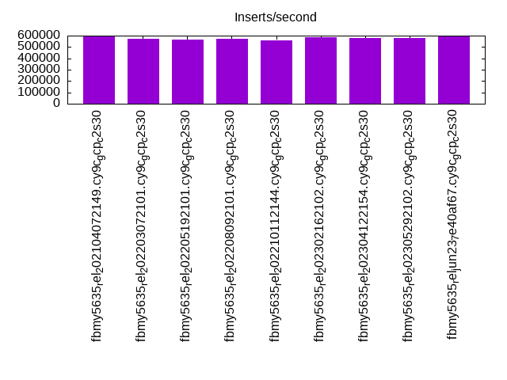
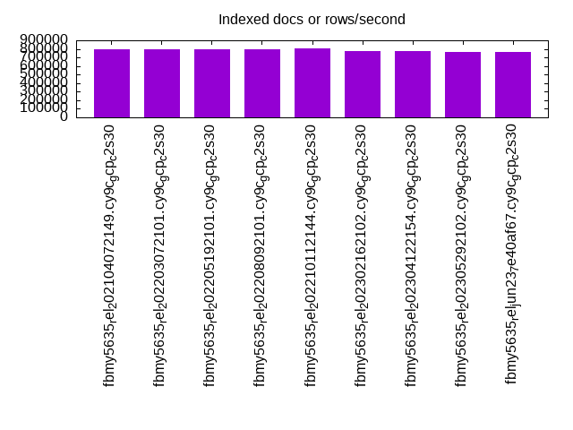
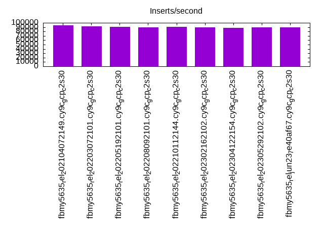
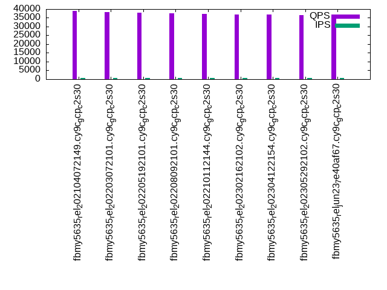
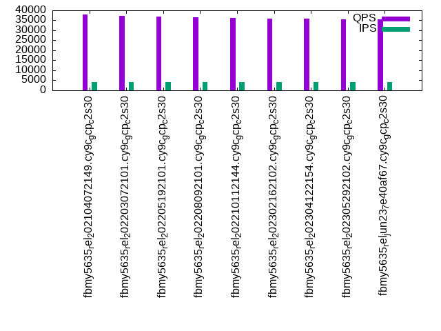
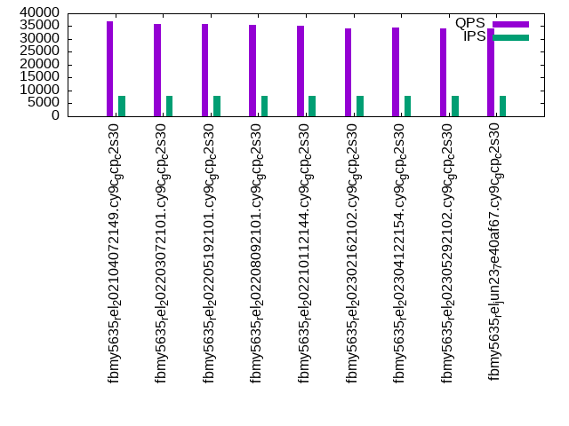

This is a report for the insert benchmark with 160M docs and 8 client(s). It is generated by scripts (bash, awk, sed) and Tufte might not be impressed. An overview of the insert benchmark is here and a short update is here. Below, by DBMS, I mean DBMS+version.config. An example is my8020.c10b40 where my means MySQL, 8020 is version 8.0.20 and c10b40 is the name for the configuration file.
The test server is a c2-standard-30 from GCP with 15 cores, hyperthreads disabled, 120G RAM, XFS + SW RAID 0 on 4 NVMe devices (1.5TB). The benchmark was run with 8 client and there were 1 or 3 connections per client (1 for queries or inserts without rate limits, 1+1 for rate limited inserts+deletes). There are 8 tables, client per table. It loads 20M rows per table without secondary indexes, creates secondary indexes, then inserts 200M rows with a delete per insert to avoid growing the table. It then does 3 read+write tests for 3600s each that do queries as fast as possible with 100, 500 and then 1000 inserts/second/client concurrent with the queries and 1000 deletes/second to avoid growing the table. The database is cached by MyRocks and the only IO is for writes.
The tested DBMS are:
The numbers are inserts/s for l.i0 and l.i1, indexed docs (or rows) /s for l.x and queries/s for q*.2. The values are the average rate over the entire test for inserts (IPS) and queries (QPS). The range of values for IPS and QPS is split into 3 parts: bottom 25%, middle 50%, top 25%. Values in the bottom 25% have a red background, values in the top 25% have a green background and values in the middle have no color. A gray background is used for values that can be ignored because the DBMS did not sustain the target insert rate. Red backgrounds are not used when the minimum value is within 80% of the max value.
| dbms | l.i0 | l.x | l.i1 | q100.1 | q500.1 | q1000.1 |
|---|---|---|---|---|---|---|
| fbmy5635_rel_202104072149.cy9c_gcp_c2s30 | 592592 | 796517 | 94096 | 39033 | 38007 | 36741 |
| fbmy5635_rel_202203072101.cy9c_gcp_c2s30 | 575540 | 800500 | 92054 | 38256 | 37122 | 35778 |
| fbmy5635_rel_202205192101.cy9c_gcp_c2s30 | 565371 | 800500 | 90441 | 37848 | 36874 | 35704 |
| fbmy5635_rel_202208092101.cy9c_gcp_c2s30 | 571428 | 792574 | 89736 | 37448 | 36564 | 35466 |
| fbmy5635_rel_202210112144.cy9c_gcp_c2s30 | 559440 | 804523 | 90222 | 37269 | 36276 | 35178 |
| fbmy5635_rel_202302162102.cy9c_gcp_c2s30 | 586080 | 769712 | 90054 | 36880 | 35754 | 34258 |
| fbmy5635_rel_202304122154.cy9c_gcp_c2s30 | 577617 | 769712 | 88638 | 36839 | 35794 | 34330 |
| fbmy5635_rel_202305292102.cy9c_gcp_c2s30 | 579710 | 762381 | 89221 | 36461 | 35513 | 34036 |
| fbmy5635_rel_jun23_7e40af67.cy9c_gcp_c2s30 | 597015 | 758768 | 89979 | 36748 | 35631 | 34256 |
This table has relative throughput, throughput for the DBMS relative to the DBMS in the first line, using the absolute throughput from the previous table. Values less than 0.95 have a yellow background. Values greater than 1.05 have a blue background.
| dbms | l.i0 | l.x | l.i1 | q100.1 | q500.1 | q1000.1 |
|---|---|---|---|---|---|---|
| fbmy5635_rel_202104072149.cy9c_gcp_c2s30 | 1.00 | 1.00 | 1.00 | 1.00 | 1.00 | 1.00 |
| fbmy5635_rel_202203072101.cy9c_gcp_c2s30 | 0.97 | 1.01 | 0.98 | 0.98 | 0.98 | 0.97 |
| fbmy5635_rel_202205192101.cy9c_gcp_c2s30 | 0.95 | 1.01 | 0.96 | 0.97 | 0.97 | 0.97 |
| fbmy5635_rel_202208092101.cy9c_gcp_c2s30 | 0.96 | 1.00 | 0.95 | 0.96 | 0.96 | 0.97 |
| fbmy5635_rel_202210112144.cy9c_gcp_c2s30 | 0.94 | 1.01 | 0.96 | 0.95 | 0.95 | 0.96 |
| fbmy5635_rel_202302162102.cy9c_gcp_c2s30 | 0.99 | 0.97 | 0.96 | 0.94 | 0.94 | 0.93 |
| fbmy5635_rel_202304122154.cy9c_gcp_c2s30 | 0.97 | 0.97 | 0.94 | 0.94 | 0.94 | 0.93 |
| fbmy5635_rel_202305292102.cy9c_gcp_c2s30 | 0.98 | 0.96 | 0.95 | 0.93 | 0.93 | 0.93 |
| fbmy5635_rel_jun23_7e40af67.cy9c_gcp_c2s30 | 1.01 | 0.95 | 0.96 | 0.94 | 0.94 | 0.93 |
This lists the average rate of inserts/s for the tests that do inserts concurrent with queries. For such tests the query rate is listed in the table above. The read+write tests are setup so that the insert rate should match the target rate every second. Cells that are not at least 95% of the target have a red background to indicate a failure to satisfy the target.
| dbms | q100.1 | q500.1 | q1000.1 |
|---|---|---|---|
| fbmy5635_rel_202104072149.cy9c_gcp_c2s30 | 797 | 3987 | 7973 |
| fbmy5635_rel_202203072101.cy9c_gcp_c2s30 | 797 | 3987 | 7973 |
| fbmy5635_rel_202205192101.cy9c_gcp_c2s30 | 797 | 3987 | 7976 |
| fbmy5635_rel_202208092101.cy9c_gcp_c2s30 | 797 | 3987 | 7973 |
| fbmy5635_rel_202210112144.cy9c_gcp_c2s30 | 797 | 3987 | 7973 |
| fbmy5635_rel_202302162102.cy9c_gcp_c2s30 | 797 | 3988 | 7976 |
| fbmy5635_rel_202304122154.cy9c_gcp_c2s30 | 797 | 3987 | 7973 |
| fbmy5635_rel_202305292102.cy9c_gcp_c2s30 | 797 | 3987 | 7978 |
| fbmy5635_rel_jun23_7e40af67.cy9c_gcp_c2s30 | 797 | 3987 | 7978 |
| target | 800 | 4000 | 8000 |
l.i0: load without secondary indexes. Graphs for performance per 1-second interval are here.
Average throughput:
Insert response time histogram: each cell has the percentage of responses that take <= the time in the header and max is the max response time in seconds. For the max column values in the top 25% of the range have a red background and in the bottom 25% of the range have a green background. The red background is not used when the min value is within 80% of the max value.
| dbms | 256us | 1ms | 4ms | 16ms | 64ms | 256ms | 1s | 4s | 16s | gt | max |
|---|---|---|---|---|---|---|---|---|---|---|---|
| fbmy5635_rel_202104072149.cy9c_gcp_c2s30 | 20.796 | 79.177 | 0.011 | 0.003 | 0.014 | 0.001 | 0.273 | ||||
| fbmy5635_rel_202203072101.cy9c_gcp_c2s30 | 19.408 | 80.564 | 0.013 | 0.001 | 0.013 | 0.001 | 0.296 | ||||
| fbmy5635_rel_202205192101.cy9c_gcp_c2s30 | 17.312 | 82.657 | 0.015 | 0.002 | 0.013 | 0.001 | 0.295 | ||||
| fbmy5635_rel_202208092101.cy9c_gcp_c2s30 | 18.917 | 81.048 | 0.020 | 0.002 | 0.014 | 0.239 | |||||
| fbmy5635_rel_202210112144.cy9c_gcp_c2s30 | 17.311 | 82.660 | 0.013 | 0.002 | 0.013 | 0.001 | 0.287 | ||||
| fbmy5635_rel_202302162102.cy9c_gcp_c2s30 | 21.278 | 78.694 | 0.013 | 0.001 | 0.014 | 0.254 | |||||
| fbmy5635_rel_202304122154.cy9c_gcp_c2s30 | 20.137 | 79.841 | 0.007 | 0.002 | 0.012 | 0.001 | 0.280 | ||||
| fbmy5635_rel_202305292102.cy9c_gcp_c2s30 | 20.510 | 79.466 | 0.009 | 0.002 | 0.014 | 0.239 | |||||
| fbmy5635_rel_jun23_7e40af67.cy9c_gcp_c2s30 | 23.608 | 76.367 | 0.011 | nonzero | 0.012 | 0.001 | 0.289 |
Performance metrics for the DBMS listed above. Some are normalized by throughput, others are not. Legend for results is here.
ips qps rps rmbps wps wmbps rpq rkbpq wpi wkbpi csps cpups cspq cpupq dbgb1 dbgb2 rss maxop p50 p99 tag 592592 0 0 0.0 575.5 176.5 0.000 0.000 0.001 0.305 79542 71.0 0.134 18 5.5 7.1 NA 0.273 78642 55860 160m.fbmy5635_rel_202104072149.cy9c_gcp_c2s30 575540 0 0 0.0 559.8 169.7 0.000 0.000 0.001 0.302 82087 71.1 0.143 19 5.5 7.0 NA 0.296 75818 51344 160m.fbmy5635_rel_202203072101.cy9c_gcp_c2s30 565371 0 0 0.0 556.0 166.7 0.000 0.000 0.001 0.302 81789 70.8 0.145 19 5.3 6.8 NA 0.295 75219 51844 160m.fbmy5635_rel_202205192101.cy9c_gcp_c2s30 571428 0 0 0.0 557.3 167.4 0.000 0.000 0.001 0.300 79294 70.5 0.139 19 5.5 7.0 NA 0.239 75445 55660 160m.fbmy5635_rel_202208092101.cy9c_gcp_c2s30 559440 0 0 0.0 556.2 162.3 0.000 0.000 0.001 0.297 78575 70.3 0.140 19 6.1 7.6 NA 0.287 74244 50944 160m.fbmy5635_rel_202210112144.cy9c_gcp_c2s30 586080 0 0 0.0 507.1 144.4 0.000 0.000 0.001 0.252 79793 71.8 0.136 18 5.2 6.7 NA 0.254 77116 57237 160m.fbmy5635_rel_202302162102.cy9c_gcp_c2s30 577617 0 0 0.0 493.4 147.1 0.000 0.000 0.001 0.261 78406 71.1 0.136 18 5.2 6.7 NA 0.280 75319 58041 160m.fbmy5635_rel_202304122154.cy9c_gcp_c2s30 579710 0 0 0.0 480.2 143.2 0.000 0.000 0.001 0.253 77381 71.2 0.133 18 5.3 6.8 NA 0.239 75018 57059 160m.fbmy5635_rel_202305292102.cy9c_gcp_c2s30 597015 0 0 0.0 492.0 143.9 0.000 0.000 0.001 0.247 80659 71.5 0.135 18 5.1 6.6 NA 0.289 77615 53241 160m.fbmy5635_rel_jun23_7e40af67.cy9c_gcp_c2s30
l.x: create secondary indexes.
Average throughput:
Performance metrics for the DBMS listed above. Some are normalized by throughput, others are not. Legend for results is here.
ips qps rps rmbps wps wmbps rpq rkbpq wpi wkbpi csps cpups cspq cpupq dbgb1 dbgb2 rss maxop p50 p99 tag 796517 0 1 0.1 320.6 112.3 0.000 0.000 0.000 0.144 1295 50.8 0.002 10 10.9 12.5 NA 0.002 NA NA 160m.fbmy5635_rel_202104072149.cy9c_gcp_c2s30 800500 0 1 0.1 335.6 119.1 0.000 0.000 0.000 0.152 1361 50.6 0.002 9 10.8 12.3 NA 0.002 NA NA 160m.fbmy5635_rel_202203072101.cy9c_gcp_c2s30 800500 0 1 0.1 321.2 114.4 0.000 0.000 0.000 0.146 1173 50.7 0.001 10 10.9 12.4 NA 0.002 NA NA 160m.fbmy5635_rel_202205192101.cy9c_gcp_c2s30 792574 0 1 0.1 329.2 114.7 0.000 0.000 0.000 0.148 1262 50.6 0.002 10 10.8 12.3 NA 0.002 NA NA 160m.fbmy5635_rel_202208092101.cy9c_gcp_c2s30 804523 0 1 0.1 327.7 111.4 0.000 0.000 0.000 0.142 1470 50.0 0.002 9 10.9 12.4 NA 0.002 NA NA 160m.fbmy5635_rel_202210112144.cy9c_gcp_c2s30 769712 0 1 0.1 284.0 103.7 0.000 0.000 0.000 0.138 1315 50.2 0.002 10 10.9 12.4 NA 0.002 NA NA 160m.fbmy5635_rel_202302162102.cy9c_gcp_c2s30 769712 0 1 0.1 287.5 101.8 0.000 0.000 0.000 0.135 1168 50.3 0.002 10 10.8 12.3 NA 0.002 NA NA 160m.fbmy5635_rel_202304122154.cy9c_gcp_c2s30 762381 0 1 0.1 280.8 101.2 0.000 0.000 0.000 0.136 1209 48.7 0.002 10 10.8 12.3 NA 0.002 NA NA 160m.fbmy5635_rel_202305292102.cy9c_gcp_c2s30 758768 0 1 0.1 279.4 99.8 0.000 0.000 0.000 0.135 1066 48.5 0.001 10 10.9 12.4 NA 0.002 NA NA 160m.fbmy5635_rel_jun23_7e40af67.cy9c_gcp_c2s30
l.i1: continue load after secondary indexes created. Graphs for performance per 1-second interval are here.
Average throughput:
Insert response time histogram: each cell has the percentage of responses that take <= the time in the header and max is the max response time in seconds. For the max column values in the top 25% of the range have a red background and in the bottom 25% of the range have a green background. The red background is not used when the min value is within 80% of the max value.
| dbms | 256us | 1ms | 4ms | 16ms | 64ms | 256ms | 1s | 4s | 16s | gt | max |
|---|---|---|---|---|---|---|---|---|---|---|---|
| fbmy5635_rel_202104072149.cy9c_gcp_c2s30 | 0.013 | 42.512 | 57.389 | 0.072 | 0.013 | 0.002 | 0.458 | ||||
| fbmy5635_rel_202203072101.cy9c_gcp_c2s30 | 0.007 | 37.585 | 62.318 | 0.076 | 0.013 | 0.001 | 0.399 | ||||
| fbmy5635_rel_202205192101.cy9c_gcp_c2s30 | 0.006 | 34.164 | 65.740 | 0.074 | 0.014 | 0.001 | 0.401 | ||||
| fbmy5635_rel_202208092101.cy9c_gcp_c2s30 | 0.006 | 33.587 | 66.318 | 0.075 | 0.013 | 0.001 | 0.407 | ||||
| fbmy5635_rel_202210112144.cy9c_gcp_c2s30 | 0.006 | 34.504 | 65.401 | 0.074 | 0.013 | 0.001 | 0.407 | ||||
| fbmy5635_rel_202302162102.cy9c_gcp_c2s30 | 0.006 | 42.376 | 57.459 | 0.145 | 0.013 | 0.001 | 0.599 | ||||
| fbmy5635_rel_202304122154.cy9c_gcp_c2s30 | 0.013 | 39.191 | 60.593 | 0.187 | 0.015 | 0.001 | 0.520 | ||||
| fbmy5635_rel_202305292102.cy9c_gcp_c2s30 | 0.005 | 41.458 | 58.358 | 0.159 | 0.018 | 0.001 | 0.673 | ||||
| fbmy5635_rel_jun23_7e40af67.cy9c_gcp_c2s30 | 0.005 | 41.896 | 57.938 | 0.146 | 0.013 | 0.001 | 0.753 |
Delete response time histogram: each cell has the percentage of responses that take <= the time in the header and max is the max response time in seconds. For the max column values in the top 25% of the range have a red background and in the bottom 25% of the range have a green background. The red background is not used when the min value is within 80% of the max value.
| dbms | 256us | 1ms | 4ms | 16ms | 64ms | 256ms | 1s | 4s | 16s | gt | max |
|---|---|---|---|---|---|---|---|---|---|---|---|
| fbmy5635_rel_202104072149.cy9c_gcp_c2s30 | 0.011 | 38.850 | 61.048 | 0.075 | 0.014 | 0.002 | 0.459 | ||||
| fbmy5635_rel_202203072101.cy9c_gcp_c2s30 | 0.007 | 36.054 | 63.846 | 0.079 | 0.014 | 0.001 | 0.397 | ||||
| fbmy5635_rel_202205192101.cy9c_gcp_c2s30 | 0.006 | 34.170 | 65.732 | 0.076 | 0.014 | 0.001 | 0.399 | ||||
| fbmy5635_rel_202208092101.cy9c_gcp_c2s30 | 0.006 | 32.540 | 67.363 | 0.077 | 0.014 | 0.001 | 0.409 | ||||
| fbmy5635_rel_202210112144.cy9c_gcp_c2s30 | 0.006 | 33.647 | 66.255 | 0.076 | 0.014 | 0.001 | 0.406 | ||||
| fbmy5635_rel_202302162102.cy9c_gcp_c2s30 | 0.006 | 37.325 | 62.442 | 0.204 | 0.022 | 0.001 | 0.727 | ||||
| fbmy5635_rel_202304122154.cy9c_gcp_c2s30 | 0.018 | 35.282 | 64.439 | 0.237 | 0.022 | 0.001 | 0.542 | ||||
| fbmy5635_rel_202305292102.cy9c_gcp_c2s30 | 0.005 | 36.725 | 63.037 | 0.206 | 0.025 | 0.002 | 0.865 | ||||
| fbmy5635_rel_jun23_7e40af67.cy9c_gcp_c2s30 | 0.005 | 37.124 | 62.657 | 0.193 | 0.020 | 0.001 | 0.873 |
Performance metrics for the DBMS listed above. Some are normalized by throughput, others are not. Legend for results is here.
ips qps rps rmbps wps wmbps rpq rkbpq wpi wkbpi csps cpups cspq cpupq dbgb1 dbgb2 rss maxop p50 p99 tag 94096 0 1 0.3 610.7 129.4 0.000 0.004 0.006 1.408 75458 56.7 0.802 90 13.8 13.8 NA 0.458 11837 8890 160m.fbmy5635_rel_202104072149.cy9c_gcp_c2s30 92054 0 1 0.3 596.6 131.2 0.000 0.004 0.006 1.459 79575 56.9 0.864 93 15.3 15.4 NA 0.399 11592 8739 160m.fbmy5635_rel_202203072101.cy9c_gcp_c2s30 90441 0 1 0.3 583.5 128.7 0.000 0.004 0.006 1.457 77340 56.5 0.855 94 13.8 13.9 NA 0.401 11393 8790 160m.fbmy5635_rel_202205192101.cy9c_gcp_c2s30 89736 0 1 0.3 584.9 127.1 0.000 0.004 0.007 1.450 74132 56.2 0.826 94 15.3 15.4 NA 0.407 11338 8544 160m.fbmy5635_rel_202208092101.cy9c_gcp_c2s30 90222 0 1 0.3 582.2 128.4 0.000 0.004 0.006 1.457 74111 56.7 0.821 94 14.0 14.1 NA 0.407 11388 8541 160m.fbmy5635_rel_202210112144.cy9c_gcp_c2s30 90054 0 204 1.5 463.5 113.1 0.002 0.017 0.005 1.286 85221 60.8 0.946 101 22.8 22.9 NA 0.599 11441 6145 160m.fbmy5635_rel_202302162102.cy9c_gcp_c2s30 88638 0 166 1.2 453.9 111.8 0.002 0.014 0.005 1.291 82939 59.2 0.936 100 14.9 15.0 NA 0.520 11293 5244 160m.fbmy5635_rel_202304122154.cy9c_gcp_c2s30 89221 0 166 1.3 456.9 114.9 0.002 0.015 0.005 1.319 83404 61.6 0.935 104 15.4 15.5 NA 0.673 11338 5194 160m.fbmy5635_rel_202305292102.cy9c_gcp_c2s30 89979 0 164 1.2 463.9 112.7 0.002 0.014 0.005 1.282 84235 60.9 0.936 102 20.3 20.4 NA 0.753 11486 5896 160m.fbmy5635_rel_jun23_7e40af67.cy9c_gcp_c2s30
q100.1: range queries with 100 insert/s per client. Graphs for performance per 1-second interval are here.
Average throughput:
Query response time histogram: each cell has the percentage of responses that take <= the time in the header and max is the max response time in seconds. For max values in the top 25% of the range have a red background and in the bottom 25% of the range have a green background. The red background is not used when the min value is within 80% of the max value.
| dbms | 256us | 1ms | 4ms | 16ms | 64ms | 256ms | 1s | 4s | 16s | gt | max |
|---|---|---|---|---|---|---|---|---|---|---|---|
| fbmy5635_rel_202104072149.cy9c_gcp_c2s30 | 98.912 | 1.086 | 0.001 | nonzero | nonzero | 0.028 | |||||
| fbmy5635_rel_202203072101.cy9c_gcp_c2s30 | 98.688 | 1.310 | 0.001 | nonzero | nonzero | 0.037 | |||||
| fbmy5635_rel_202205192101.cy9c_gcp_c2s30 | 98.407 | 1.592 | 0.001 | nonzero | nonzero | 0.047 | |||||
| fbmy5635_rel_202208092101.cy9c_gcp_c2s30 | 98.298 | 1.701 | 0.001 | nonzero | nonzero | 0.020 | |||||
| fbmy5635_rel_202210112144.cy9c_gcp_c2s30 | 98.215 | 1.784 | 0.001 | nonzero | nonzero | 0.024 | |||||
| fbmy5635_rel_202302162102.cy9c_gcp_c2s30 | 96.747 | 3.252 | 0.001 | nonzero | nonzero | 0.028 | |||||
| fbmy5635_rel_202304122154.cy9c_gcp_c2s30 | 97.114 | 2.885 | 0.001 | nonzero | nonzero | 0.024 | |||||
| fbmy5635_rel_202305292102.cy9c_gcp_c2s30 | 96.897 | 3.102 | 0.001 | nonzero | nonzero | 0.037 | |||||
| fbmy5635_rel_jun23_7e40af67.cy9c_gcp_c2s30 | 97.222 | 2.776 | 0.001 | nonzero | nonzero | 0.025 |
Insert response time histogram: each cell has the percentage of responses that take <= the time in the header and max is the max response time in seconds. For max values in the top 25% of the range have a red background and in the bottom 25% of the range have a green background. The red background is not used when the min value is within 80% of the max value.
| dbms | 256us | 1ms | 4ms | 16ms | 64ms | 256ms | 1s | 4s | 16s | gt | max |
|---|---|---|---|---|---|---|---|---|---|---|---|
| fbmy5635_rel_202104072149.cy9c_gcp_c2s30 | 8.644 | 91.314 | 0.042 | 0.010 | |||||||
| fbmy5635_rel_202203072101.cy9c_gcp_c2s30 | 3.328 | 96.649 | 0.023 | 0.014 | |||||||
| fbmy5635_rel_202205192101.cy9c_gcp_c2s30 | 1.316 | 98.653 | 0.030 | 0.002 | 0.016 | ||||||
| fbmy5635_rel_202208092101.cy9c_gcp_c2s30 | 0.667 | 99.257 | 0.076 | 0.014 | |||||||
| fbmy5635_rel_202210112144.cy9c_gcp_c2s30 | 0.981 | 99.003 | 0.016 | 0.011 | |||||||
| fbmy5635_rel_202302162102.cy9c_gcp_c2s30 | 10.502 | 89.462 | 0.035 | 0.002 | 0.019 | ||||||
| fbmy5635_rel_202304122154.cy9c_gcp_c2s30 | 15.309 | 84.661 | 0.030 | 0.013 | |||||||
| fbmy5635_rel_202305292102.cy9c_gcp_c2s30 | 9.234 | 90.752 | 0.012 | 0.002 | 0.018 | ||||||
| fbmy5635_rel_jun23_7e40af67.cy9c_gcp_c2s30 | 10.469 | 89.512 | 0.019 | 0.009 |
Delete response time histogram: each cell has the percentage of responses that take <= the time in the header and max is the max response time in seconds. For max values in the top 25% of the range have a red background and in the bottom 25% of the range have a green background. The red background is not used when the min value is within 80% of the max value.
| dbms | 256us | 1ms | 4ms | 16ms | 64ms | 256ms | 1s | 4s | 16s | gt | max |
|---|---|---|---|---|---|---|---|---|---|---|---|
| fbmy5635_rel_202104072149.cy9c_gcp_c2s30 | 5.854 | 94.078 | 0.068 | 0.012 | |||||||
| fbmy5635_rel_202203072101.cy9c_gcp_c2s30 | 2.264 | 97.688 | 0.049 | 0.014 | |||||||
| fbmy5635_rel_202205192101.cy9c_gcp_c2s30 | 2.710 | 97.247 | 0.042 | 0.002 | 0.017 | ||||||
| fbmy5635_rel_202208092101.cy9c_gcp_c2s30 | 1.507 | 98.387 | 0.106 | 0.014 | |||||||
| fbmy5635_rel_202210112144.cy9c_gcp_c2s30 | 1.057 | 98.925 | 0.017 | 0.010 | |||||||
| fbmy5635_rel_202302162102.cy9c_gcp_c2s30 | 5.319 | 94.634 | 0.042 | 0.005 | 0.042 | ||||||
| fbmy5635_rel_202304122154.cy9c_gcp_c2s30 | 6.384 | 93.536 | 0.078 | 0.002 | 0.048 | ||||||
| fbmy5635_rel_202305292102.cy9c_gcp_c2s30 | 5.014 | 94.917 | 0.069 | 0.015 | |||||||
| fbmy5635_rel_jun23_7e40af67.cy9c_gcp_c2s30 | 6.401 | 93.543 | 0.056 | 0.014 |
Performance metrics for the DBMS listed above. Some are normalized by throughput, others are not. Legend for results is here.
ips qps rps rmbps wps wmbps rpq rkbpq wpi wkbpi csps cpups cspq cpupq dbgb1 dbgb2 rss maxop p50 p99 tag 797 39033 0 0.0 14.9 1.5 0.000 0.000 0.019 1.935 151815 53.5 3.889 206 12.0 12.7 NA 0.028 4813 4509 160m.fbmy5635_rel_202104072149.cy9c_gcp_c2s30 797 38256 0 0.0 15.1 1.6 0.000 0.000 0.019 2.059 148980 53.6 3.894 210 12.1 12.8 NA 0.037 4749 4395 160m.fbmy5635_rel_202203072101.cy9c_gcp_c2s30 797 37848 0 0.0 15.8 1.7 0.000 0.000 0.020 2.168 147287 53.5 3.892 212 12.2 12.9 NA 0.047 4731 4347 160m.fbmy5635_rel_202205192101.cy9c_gcp_c2s30 797 37448 0 0.0 17.0 1.7 0.000 0.000 0.021 2.145 146135 53.5 3.902 214 12.2 12.9 NA 0.020 4699 4365 160m.fbmy5635_rel_202208092101.cy9c_gcp_c2s30 797 37269 0 0.0 18.5 1.8 0.000 0.000 0.023 2.271 145435 53.5 3.902 215 12.1 12.9 NA 0.024 4651 4315 160m.fbmy5635_rel_202210112144.cy9c_gcp_c2s30 797 36880 0 0.0 17.6 2.3 0.000 0.001 0.022 2.986 143060 53.7 3.879 218 12.2 12.9 NA 0.028 4587 3468 160m.fbmy5635_rel_202302162102.cy9c_gcp_c2s30 797 36839 2 0.0 14.0 1.7 0.000 0.001 0.018 2.200 143109 53.4 3.885 217 12.2 12.9 NA 0.024 4637 3836 160m.fbmy5635_rel_202304122154.cy9c_gcp_c2s30 797 36461 0 0.0 14.4 1.8 0.000 0.001 0.018 2.318 141568 53.4 3.883 220 12.3 13.0 NA 0.037 4651 3564 160m.fbmy5635_rel_202305292102.cy9c_gcp_c2s30 797 36748 1 0.0 14.1 1.7 0.000 0.001 0.018 2.142 142775 53.4 3.885 218 12.0 12.8 NA 0.025 4603 3676 160m.fbmy5635_rel_jun23_7e40af67.cy9c_gcp_c2s30
q500.1: range queries with 500 insert/s per client. Graphs for performance per 1-second interval are here.
Average throughput:
Query response time histogram: each cell has the percentage of responses that take <= the time in the header and max is the max response time in seconds. For max values in the top 25% of the range have a red background and in the bottom 25% of the range have a green background. The red background is not used when the min value is within 80% of the max value.
| dbms | 256us | 1ms | 4ms | 16ms | 64ms | 256ms | 1s | 4s | 16s | gt | max |
|---|---|---|---|---|---|---|---|---|---|---|---|
| fbmy5635_rel_202104072149.cy9c_gcp_c2s30 | 97.848 | 2.149 | 0.003 | nonzero | nonzero | 0.025 | |||||
| fbmy5635_rel_202203072101.cy9c_gcp_c2s30 | 97.145 | 2.852 | 0.003 | nonzero | 0.015 | ||||||
| fbmy5635_rel_202205192101.cy9c_gcp_c2s30 | 97.033 | 2.964 | 0.003 | nonzero | nonzero | 0.037 | |||||
| fbmy5635_rel_202208092101.cy9c_gcp_c2s30 | 96.856 | 3.141 | 0.003 | nonzero | nonzero | 0.024 | |||||
| fbmy5635_rel_202210112144.cy9c_gcp_c2s30 | 96.302 | 3.694 | 0.004 | nonzero | nonzero | 0.024 | |||||
| fbmy5635_rel_202302162102.cy9c_gcp_c2s30 | 94.326 | 5.669 | 0.005 | nonzero | nonzero | 0.022 | |||||
| fbmy5635_rel_202304122154.cy9c_gcp_c2s30 | 94.369 | 5.626 | 0.004 | nonzero | nonzero | 0.026 | |||||
| fbmy5635_rel_202305292102.cy9c_gcp_c2s30 | 94.223 | 5.773 | 0.004 | nonzero | nonzero | 0.020 | |||||
| fbmy5635_rel_jun23_7e40af67.cy9c_gcp_c2s30 | 94.041 | 5.955 | 0.005 | nonzero | nonzero | 0.027 |
Insert response time histogram: each cell has the percentage of responses that take <= the time in the header and max is the max response time in seconds. For max values in the top 25% of the range have a red background and in the bottom 25% of the range have a green background. The red background is not used when the min value is within 80% of the max value.
| dbms | 256us | 1ms | 4ms | 16ms | 64ms | 256ms | 1s | 4s | 16s | gt | max |
|---|---|---|---|---|---|---|---|---|---|---|---|
| fbmy5635_rel_202104072149.cy9c_gcp_c2s30 | 31.958 | 68.023 | 0.018 | 0.001 | nonzero | 0.066 | |||||
| fbmy5635_rel_202203072101.cy9c_gcp_c2s30 | 9.160 | 90.809 | 0.029 | 0.001 | 0.001 | 0.086 | |||||
| fbmy5635_rel_202205192101.cy9c_gcp_c2s30 | 5.916 | 94.047 | 0.037 | nonzero | 0.089 | ||||||
| fbmy5635_rel_202208092101.cy9c_gcp_c2s30 | 6.282 | 93.689 | 0.028 | 0.001 | nonzero | 0.066 | |||||
| fbmy5635_rel_202210112144.cy9c_gcp_c2s30 | 3.594 | 96.374 | 0.031 | nonzero | 0.017 | ||||||
| fbmy5635_rel_202302162102.cy9c_gcp_c2s30 | 9.905 | 89.564 | 0.528 | 0.003 | 0.020 | ||||||
| fbmy5635_rel_202304122154.cy9c_gcp_c2s30 | 12.456 | 87.370 | 0.174 | nonzero | 0.018 | ||||||
| fbmy5635_rel_202305292102.cy9c_gcp_c2s30 | 13.185 | 86.750 | 0.065 | 0.001 | 0.019 | ||||||
| fbmy5635_rel_jun23_7e40af67.cy9c_gcp_c2s30 | 10.373 | 89.537 | 0.088 | 0.002 | 0.024 |
Delete response time histogram: each cell has the percentage of responses that take <= the time in the header and max is the max response time in seconds. For max values in the top 25% of the range have a red background and in the bottom 25% of the range have a green background. The red background is not used when the min value is within 80% of the max value.
| dbms | 256us | 1ms | 4ms | 16ms | 64ms | 256ms | 1s | 4s | 16s | gt | max |
|---|---|---|---|---|---|---|---|---|---|---|---|
| fbmy5635_rel_202104072149.cy9c_gcp_c2s30 | 27.980 | 71.979 | 0.038 | 0.003 | nonzero | 0.066 | |||||
| fbmy5635_rel_202203072101.cy9c_gcp_c2s30 | 10.328 | 89.630 | 0.038 | 0.003 | 0.001 | 0.086 | |||||
| fbmy5635_rel_202205192101.cy9c_gcp_c2s30 | 10.509 | 89.442 | 0.047 | 0.002 | 0.001 | 0.095 | |||||
| fbmy5635_rel_202208092101.cy9c_gcp_c2s30 | 9.247 | 90.698 | 0.052 | 0.002 | nonzero | 0.066 | |||||
| fbmy5635_rel_202210112144.cy9c_gcp_c2s30 | 4.836 | 95.115 | 0.045 | 0.003 | 0.045 | ||||||
| fbmy5635_rel_202302162102.cy9c_gcp_c2s30 | 14.275 | 85.198 | 0.523 | 0.004 | 0.029 | ||||||
| fbmy5635_rel_202304122154.cy9c_gcp_c2s30 | 16.446 | 83.388 | 0.165 | 0.002 | 0.029 | ||||||
| fbmy5635_rel_202305292102.cy9c_gcp_c2s30 | 17.049 | 82.891 | 0.058 | 0.002 | 0.029 | ||||||
| fbmy5635_rel_jun23_7e40af67.cy9c_gcp_c2s30 | 14.438 | 85.448 | 0.112 | 0.002 | 0.047 |
Performance metrics for the DBMS listed above. Some are normalized by throughput, others are not. Legend for results is here.
ips qps rps rmbps wps wmbps rpq rkbpq wpi wkbpi csps cpups cspq cpupq dbgb1 dbgb2 rss maxop p50 p99 tag 3987 38007 0 0.0 39.1 6.2 0.000 0.000 0.010 1.586 149296 55.2 3.928 218 12.1 13.8 NA 0.025 4795 4443 160m.fbmy5635_rel_202104072149.cy9c_gcp_c2s30 3987 37122 0 0.0 39.2 6.4 0.000 0.000 0.010 1.633 145970 55.4 3.932 224 12.1 13.9 NA 0.015 4653 4347 160m.fbmy5635_rel_202203072101.cy9c_gcp_c2s30 3987 36874 0 0.0 37.6 6.1 0.000 0.000 0.009 1.576 145016 55.3 3.933 225 12.1 13.9 NA 0.037 4635 4301 160m.fbmy5635_rel_202205192101.cy9c_gcp_c2s30 3987 36564 0 0.0 41.0 6.4 0.000 0.000 0.010 1.633 143900 55.4 3.936 227 12.1 13.9 NA 0.024 4603 4283 160m.fbmy5635_rel_202208092101.cy9c_gcp_c2s30 3987 36276 0 0.0 40.1 6.0 0.000 0.000 0.010 1.535 142837 55.3 3.937 229 12.1 13.9 NA 0.024 4555 4219 160m.fbmy5635_rel_202210112144.cy9c_gcp_c2s30 3988 35754 1 0.0 31.7 5.1 0.000 0.001 0.008 1.312 140099 55.3 3.918 232 12.2 14.0 NA 0.022 4491 4077 160m.fbmy5635_rel_202302162102.cy9c_gcp_c2s30 3987 35794 11 0.1 32.2 5.1 0.000 0.002 0.008 1.302 140339 55.2 3.921 231 12.2 14.0 NA 0.026 4493 4093 160m.fbmy5635_rel_202304122154.cy9c_gcp_c2s30 3987 35513 0 0.0 31.7 5.0 0.000 0.000 0.008 1.284 139151 55.2 3.918 233 12.3 14.1 NA 0.020 4461 4060 160m.fbmy5635_rel_202305292102.cy9c_gcp_c2s30 3987 35631 5 0.1 32.6 5.0 0.000 0.002 0.008 1.275 139725 55.3 3.921 233 12.2 14.1 NA 0.027 4475 4077 160m.fbmy5635_rel_jun23_7e40af67.cy9c_gcp_c2s30
q1000.1: range queries with 1000 insert/s per client. Graphs for performance per 1-second interval are here.
Average throughput:
Query response time histogram: each cell has the percentage of responses that take <= the time in the header and max is the max response time in seconds. For max values in the top 25% of the range have a red background and in the bottom 25% of the range have a green background. The red background is not used when the min value is within 80% of the max value.
| dbms | 256us | 1ms | 4ms | 16ms | 64ms | 256ms | 1s | 4s | 16s | gt | max |
|---|---|---|---|---|---|---|---|---|---|---|---|
| fbmy5635_rel_202104072149.cy9c_gcp_c2s30 | 94.115 | 5.878 | 0.006 | nonzero | nonzero | 0.044 | |||||
| fbmy5635_rel_202203072101.cy9c_gcp_c2s30 | 93.005 | 6.988 | 0.006 | nonzero | nonzero | 0.040 | |||||
| fbmy5635_rel_202205192101.cy9c_gcp_c2s30 | 92.784 | 7.209 | 0.006 | nonzero | nonzero | 0.034 | |||||
| fbmy5635_rel_202208092101.cy9c_gcp_c2s30 | 92.653 | 7.340 | 0.006 | nonzero | nonzero | 0.038 | |||||
| fbmy5635_rel_202210112144.cy9c_gcp_c2s30 | 91.873 | 8.120 | 0.007 | nonzero | nonzero | 0.034 | |||||
| fbmy5635_rel_202302162102.cy9c_gcp_c2s30 | 87.255 | 12.736 | 0.009 | nonzero | nonzero | 0.034 | |||||
| fbmy5635_rel_202304122154.cy9c_gcp_c2s30 | 87.717 | 12.274 | 0.008 | nonzero | nonzero | 0.035 | |||||
| fbmy5635_rel_202305292102.cy9c_gcp_c2s30 | 86.510 | 13.481 | 0.009 | nonzero | nonzero | 0.036 | |||||
| fbmy5635_rel_jun23_7e40af67.cy9c_gcp_c2s30 | 87.339 | 12.642 | 0.018 | nonzero | nonzero | 0.035 |
Insert response time histogram: each cell has the percentage of responses that take <= the time in the header and max is the max response time in seconds. For max values in the top 25% of the range have a red background and in the bottom 25% of the range have a green background. The red background is not used when the min value is within 80% of the max value.
| dbms | 256us | 1ms | 4ms | 16ms | 64ms | 256ms | 1s | 4s | 16s | gt | max |
|---|---|---|---|---|---|---|---|---|---|---|---|
| fbmy5635_rel_202104072149.cy9c_gcp_c2s30 | 21.411 | 78.530 | 0.057 | 0.002 | 0.025 | ||||||
| fbmy5635_rel_202203072101.cy9c_gcp_c2s30 | 9.287 | 90.661 | 0.051 | 0.001 | 0.031 | ||||||
| fbmy5635_rel_202205192101.cy9c_gcp_c2s30 | 4.911 | 95.049 | 0.039 | 0.001 | 0.032 | ||||||
| fbmy5635_rel_202208092101.cy9c_gcp_c2s30 | 5.703 | 94.259 | 0.037 | 0.001 | 0.033 | ||||||
| fbmy5635_rel_202210112144.cy9c_gcp_c2s30 | 2.812 | 97.139 | 0.048 | 0.001 | 0.022 | ||||||
| fbmy5635_rel_202302162102.cy9c_gcp_c2s30 | 8.751 | 90.006 | 1.239 | 0.003 | 0.018 | ||||||
| fbmy5635_rel_202304122154.cy9c_gcp_c2s30 | 9.434 | 90.264 | 0.299 | 0.003 | 0.034 | ||||||
| fbmy5635_rel_202305292102.cy9c_gcp_c2s30 | 7.400 | 91.574 | 1.020 | 0.007 | 0.032 | ||||||
| fbmy5635_rel_jun23_7e40af67.cy9c_gcp_c2s30 | 3.539 | 69.715 | 26.732 | 0.014 | 0.035 |
Delete response time histogram: each cell has the percentage of responses that take <= the time in the header and max is the max response time in seconds. For max values in the top 25% of the range have a red background and in the bottom 25% of the range have a green background. The red background is not used when the min value is within 80% of the max value.
| dbms | 256us | 1ms | 4ms | 16ms | 64ms | 256ms | 1s | 4s | 16s | gt | max |
|---|---|---|---|---|---|---|---|---|---|---|---|
| fbmy5635_rel_202104072149.cy9c_gcp_c2s30 | 20.718 | 79.182 | 0.091 | 0.009 | 0.044 | ||||||
| fbmy5635_rel_202203072101.cy9c_gcp_c2s30 | 10.392 | 89.513 | 0.089 | 0.006 | 0.039 | ||||||
| fbmy5635_rel_202205192101.cy9c_gcp_c2s30 | 7.340 | 92.594 | 0.061 | 0.005 | 0.042 | ||||||
| fbmy5635_rel_202208092101.cy9c_gcp_c2s30 | 7.619 | 92.282 | 0.095 | 0.004 | 0.044 | ||||||
| fbmy5635_rel_202210112144.cy9c_gcp_c2s30 | 4.526 | 95.370 | 0.099 | 0.005 | 0.040 | ||||||
| fbmy5635_rel_202302162102.cy9c_gcp_c2s30 | 13.124 | 85.694 | 1.175 | 0.008 | 0.034 | ||||||
| fbmy5635_rel_202304122154.cy9c_gcp_c2s30 | 14.164 | 85.518 | 0.311 | 0.007 | 0.035 | ||||||
| fbmy5635_rel_202305292102.cy9c_gcp_c2s30 | 10.409 | 88.605 | 0.977 | 0.009 | 0.036 | ||||||
| fbmy5635_rel_jun23_7e40af67.cy9c_gcp_c2s30 | 5.474 | 68.793 | 25.716 | 0.017 | 0.035 |
Performance metrics for the DBMS listed above. Some are normalized by throughput, others are not. Legend for results is here.
ips qps rps rmbps wps wmbps rpq rkbpq wpi wkbpi csps cpups cspq cpupq dbgb1 dbgb2 rss maxop p50 p99 tag 7973 36741 0 0.0 73.6 13.3 0.000 0.000 0.009 1.703 145828 57.8 3.969 236 12.2 14.1 NA 0.044 4603 4269 160m.fbmy5635_rel_202104072149.cy9c_gcp_c2s30 7973 35778 0 0.0 72.6 13.1 0.000 0.000 0.009 1.686 142305 57.9 3.978 243 12.4 14.4 NA 0.040 4507 4187 160m.fbmy5635_rel_202203072101.cy9c_gcp_c2s30 7976 35704 0 0.0 72.4 13.0 0.000 0.000 0.009 1.667 142009 58.0 3.977 244 12.3 14.3 NA 0.034 4491 4171 160m.fbmy5635_rel_202205192101.cy9c_gcp_c2s30 7973 35466 0 0.0 74.2 13.0 0.000 0.000 0.009 1.669 141266 57.9 3.983 245 12.2 14.2 NA 0.038 4445 4139 160m.fbmy5635_rel_202208092101.cy9c_gcp_c2s30 7973 35178 0 0.0 74.9 13.2 0.000 0.000 0.009 1.698 140011 58.0 3.980 247 12.2 14.1 NA 0.034 4427 4108 160m.fbmy5635_rel_202210112144.cy9c_gcp_c2s30 7976 34258 0 0.0 61.6 10.7 0.000 0.000 0.008 1.375 135317 57.9 3.950 254 12.4 14.4 NA 0.034 4301 3900 160m.fbmy5635_rel_202302162102.cy9c_gcp_c2s30 7973 34330 10 0.1 61.4 11.0 0.000 0.003 0.008 1.413 135982 57.9 3.961 253 12.5 14.5 NA 0.035 4315 3900 160m.fbmy5635_rel_202304122154.cy9c_gcp_c2s30 7978 34036 0 0.0 62.1 11.0 0.000 0.000 0.008 1.406 134436 58.1 3.950 256 12.7 12.7 NA 0.036 4283 3868 160m.fbmy5635_rel_202305292102.cy9c_gcp_c2s30 7978 34256 4 0.0 61.2 10.7 0.000 0.001 0.008 1.372 134974 58.0 3.940 254 12.5 12.5 NA 0.035 4317 3900 160m.fbmy5635_rel_jun23_7e40af67.cy9c_gcp_c2s30
l.i0: load without secondary indexes
Performance metrics for all DBMS, not just the ones listed above. Some are normalized by throughput, others are not. Legend for results is here.
ips qps rps rmbps wps wmbps rpq rkbpq wpi wkbpi csps cpups cspq cpupq dbgb1 dbgb2 rss maxop p50 p99 tag 592592 0 0 0.0 575.5 176.5 0.000 0.000 0.001 0.305 79542 71.0 0.134 18 5.5 7.1 NA 0.273 78642 55860 160m.fbmy5635_rel_202104072149.cy9c_gcp_c2s30 575540 0 0 0.0 559.8 169.7 0.000 0.000 0.001 0.302 82087 71.1 0.143 19 5.5 7.0 NA 0.296 75818 51344 160m.fbmy5635_rel_202203072101.cy9c_gcp_c2s30 565371 0 0 0.0 556.0 166.7 0.000 0.000 0.001 0.302 81789 70.8 0.145 19 5.3 6.8 NA 0.295 75219 51844 160m.fbmy5635_rel_202205192101.cy9c_gcp_c2s30 571428 0 0 0.0 557.3 167.4 0.000 0.000 0.001 0.300 79294 70.5 0.139 19 5.5 7.0 NA 0.239 75445 55660 160m.fbmy5635_rel_202208092101.cy9c_gcp_c2s30 559440 0 0 0.0 556.2 162.3 0.000 0.000 0.001 0.297 78575 70.3 0.140 19 6.1 7.6 NA 0.287 74244 50944 160m.fbmy5635_rel_202210112144.cy9c_gcp_c2s30 586080 0 0 0.0 507.1 144.4 0.000 0.000 0.001 0.252 79793 71.8 0.136 18 5.2 6.7 NA 0.254 77116 57237 160m.fbmy5635_rel_202302162102.cy9c_gcp_c2s30 577617 0 0 0.0 493.4 147.1 0.000 0.000 0.001 0.261 78406 71.1 0.136 18 5.2 6.7 NA 0.280 75319 58041 160m.fbmy5635_rel_202304122154.cy9c_gcp_c2s30 579710 0 0 0.0 480.2 143.2 0.000 0.000 0.001 0.253 77381 71.2 0.133 18 5.3 6.8 NA 0.239 75018 57059 160m.fbmy5635_rel_202305292102.cy9c_gcp_c2s30 597015 0 0 0.0 492.0 143.9 0.000 0.000 0.001 0.247 80659 71.5 0.135 18 5.1 6.6 NA 0.289 77615 53241 160m.fbmy5635_rel_jun23_7e40af67.cy9c_gcp_c2s30
l.x: create secondary indexes
Performance metrics for all DBMS, not just the ones listed above. Some are normalized by throughput, others are not. Legend for results is here.
ips qps rps rmbps wps wmbps rpq rkbpq wpi wkbpi csps cpups cspq cpupq dbgb1 dbgb2 rss maxop p50 p99 tag 796517 0 1 0.1 320.6 112.3 0.000 0.000 0.000 0.144 1295 50.8 0.002 10 10.9 12.5 NA 0.002 NA NA 160m.fbmy5635_rel_202104072149.cy9c_gcp_c2s30 800500 0 1 0.1 335.6 119.1 0.000 0.000 0.000 0.152 1361 50.6 0.002 9 10.8 12.3 NA 0.002 NA NA 160m.fbmy5635_rel_202203072101.cy9c_gcp_c2s30 800500 0 1 0.1 321.2 114.4 0.000 0.000 0.000 0.146 1173 50.7 0.001 10 10.9 12.4 NA 0.002 NA NA 160m.fbmy5635_rel_202205192101.cy9c_gcp_c2s30 792574 0 1 0.1 329.2 114.7 0.000 0.000 0.000 0.148 1262 50.6 0.002 10 10.8 12.3 NA 0.002 NA NA 160m.fbmy5635_rel_202208092101.cy9c_gcp_c2s30 804523 0 1 0.1 327.7 111.4 0.000 0.000 0.000 0.142 1470 50.0 0.002 9 10.9 12.4 NA 0.002 NA NA 160m.fbmy5635_rel_202210112144.cy9c_gcp_c2s30 769712 0 1 0.1 284.0 103.7 0.000 0.000 0.000 0.138 1315 50.2 0.002 10 10.9 12.4 NA 0.002 NA NA 160m.fbmy5635_rel_202302162102.cy9c_gcp_c2s30 769712 0 1 0.1 287.5 101.8 0.000 0.000 0.000 0.135 1168 50.3 0.002 10 10.8 12.3 NA 0.002 NA NA 160m.fbmy5635_rel_202304122154.cy9c_gcp_c2s30 762381 0 1 0.1 280.8 101.2 0.000 0.000 0.000 0.136 1209 48.7 0.002 10 10.8 12.3 NA 0.002 NA NA 160m.fbmy5635_rel_202305292102.cy9c_gcp_c2s30 758768 0 1 0.1 279.4 99.8 0.000 0.000 0.000 0.135 1066 48.5 0.001 10 10.9 12.4 NA 0.002 NA NA 160m.fbmy5635_rel_jun23_7e40af67.cy9c_gcp_c2s30
l.i1: continue load after secondary indexes created
Performance metrics for all DBMS, not just the ones listed above. Some are normalized by throughput, others are not. Legend for results is here.
ips qps rps rmbps wps wmbps rpq rkbpq wpi wkbpi csps cpups cspq cpupq dbgb1 dbgb2 rss maxop p50 p99 tag 94096 0 1 0.3 610.7 129.4 0.000 0.004 0.006 1.408 75458 56.7 0.802 90 13.8 13.8 NA 0.458 11837 8890 160m.fbmy5635_rel_202104072149.cy9c_gcp_c2s30 92054 0 1 0.3 596.6 131.2 0.000 0.004 0.006 1.459 79575 56.9 0.864 93 15.3 15.4 NA 0.399 11592 8739 160m.fbmy5635_rel_202203072101.cy9c_gcp_c2s30 90441 0 1 0.3 583.5 128.7 0.000 0.004 0.006 1.457 77340 56.5 0.855 94 13.8 13.9 NA 0.401 11393 8790 160m.fbmy5635_rel_202205192101.cy9c_gcp_c2s30 89736 0 1 0.3 584.9 127.1 0.000 0.004 0.007 1.450 74132 56.2 0.826 94 15.3 15.4 NA 0.407 11338 8544 160m.fbmy5635_rel_202208092101.cy9c_gcp_c2s30 90222 0 1 0.3 582.2 128.4 0.000 0.004 0.006 1.457 74111 56.7 0.821 94 14.0 14.1 NA 0.407 11388 8541 160m.fbmy5635_rel_202210112144.cy9c_gcp_c2s30 90054 0 204 1.5 463.5 113.1 0.002 0.017 0.005 1.286 85221 60.8 0.946 101 22.8 22.9 NA 0.599 11441 6145 160m.fbmy5635_rel_202302162102.cy9c_gcp_c2s30 88638 0 166 1.2 453.9 111.8 0.002 0.014 0.005 1.291 82939 59.2 0.936 100 14.9 15.0 NA 0.520 11293 5244 160m.fbmy5635_rel_202304122154.cy9c_gcp_c2s30 89221 0 166 1.3 456.9 114.9 0.002 0.015 0.005 1.319 83404 61.6 0.935 104 15.4 15.5 NA 0.673 11338 5194 160m.fbmy5635_rel_202305292102.cy9c_gcp_c2s30 89979 0 164 1.2 463.9 112.7 0.002 0.014 0.005 1.282 84235 60.9 0.936 102 20.3 20.4 NA 0.753 11486 5896 160m.fbmy5635_rel_jun23_7e40af67.cy9c_gcp_c2s30
q100.1: range queries with 100 insert/s per client
Performance metrics for all DBMS, not just the ones listed above. Some are normalized by throughput, others are not. Legend for results is here.
ips qps rps rmbps wps wmbps rpq rkbpq wpi wkbpi csps cpups cspq cpupq dbgb1 dbgb2 rss maxop p50 p99 tag 797 39033 0 0.0 14.9 1.5 0.000 0.000 0.019 1.935 151815 53.5 3.889 206 12.0 12.7 NA 0.028 4813 4509 160m.fbmy5635_rel_202104072149.cy9c_gcp_c2s30 797 38256 0 0.0 15.1 1.6 0.000 0.000 0.019 2.059 148980 53.6 3.894 210 12.1 12.8 NA 0.037 4749 4395 160m.fbmy5635_rel_202203072101.cy9c_gcp_c2s30 797 37848 0 0.0 15.8 1.7 0.000 0.000 0.020 2.168 147287 53.5 3.892 212 12.2 12.9 NA 0.047 4731 4347 160m.fbmy5635_rel_202205192101.cy9c_gcp_c2s30 797 37448 0 0.0 17.0 1.7 0.000 0.000 0.021 2.145 146135 53.5 3.902 214 12.2 12.9 NA 0.020 4699 4365 160m.fbmy5635_rel_202208092101.cy9c_gcp_c2s30 797 37269 0 0.0 18.5 1.8 0.000 0.000 0.023 2.271 145435 53.5 3.902 215 12.1 12.9 NA 0.024 4651 4315 160m.fbmy5635_rel_202210112144.cy9c_gcp_c2s30 797 36880 0 0.0 17.6 2.3 0.000 0.001 0.022 2.986 143060 53.7 3.879 218 12.2 12.9 NA 0.028 4587 3468 160m.fbmy5635_rel_202302162102.cy9c_gcp_c2s30 797 36839 2 0.0 14.0 1.7 0.000 0.001 0.018 2.200 143109 53.4 3.885 217 12.2 12.9 NA 0.024 4637 3836 160m.fbmy5635_rel_202304122154.cy9c_gcp_c2s30 797 36461 0 0.0 14.4 1.8 0.000 0.001 0.018 2.318 141568 53.4 3.883 220 12.3 13.0 NA 0.037 4651 3564 160m.fbmy5635_rel_202305292102.cy9c_gcp_c2s30 797 36748 1 0.0 14.1 1.7 0.000 0.001 0.018 2.142 142775 53.4 3.885 218 12.0 12.8 NA 0.025 4603 3676 160m.fbmy5635_rel_jun23_7e40af67.cy9c_gcp_c2s30
q500.1: range queries with 500 insert/s per client
Performance metrics for all DBMS, not just the ones listed above. Some are normalized by throughput, others are not. Legend for results is here.
ips qps rps rmbps wps wmbps rpq rkbpq wpi wkbpi csps cpups cspq cpupq dbgb1 dbgb2 rss maxop p50 p99 tag 3987 38007 0 0.0 39.1 6.2 0.000 0.000 0.010 1.586 149296 55.2 3.928 218 12.1 13.8 NA 0.025 4795 4443 160m.fbmy5635_rel_202104072149.cy9c_gcp_c2s30 3987 37122 0 0.0 39.2 6.4 0.000 0.000 0.010 1.633 145970 55.4 3.932 224 12.1 13.9 NA 0.015 4653 4347 160m.fbmy5635_rel_202203072101.cy9c_gcp_c2s30 3987 36874 0 0.0 37.6 6.1 0.000 0.000 0.009 1.576 145016 55.3 3.933 225 12.1 13.9 NA 0.037 4635 4301 160m.fbmy5635_rel_202205192101.cy9c_gcp_c2s30 3987 36564 0 0.0 41.0 6.4 0.000 0.000 0.010 1.633 143900 55.4 3.936 227 12.1 13.9 NA 0.024 4603 4283 160m.fbmy5635_rel_202208092101.cy9c_gcp_c2s30 3987 36276 0 0.0 40.1 6.0 0.000 0.000 0.010 1.535 142837 55.3 3.937 229 12.1 13.9 NA 0.024 4555 4219 160m.fbmy5635_rel_202210112144.cy9c_gcp_c2s30 3988 35754 1 0.0 31.7 5.1 0.000 0.001 0.008 1.312 140099 55.3 3.918 232 12.2 14.0 NA 0.022 4491 4077 160m.fbmy5635_rel_202302162102.cy9c_gcp_c2s30 3987 35794 11 0.1 32.2 5.1 0.000 0.002 0.008 1.302 140339 55.2 3.921 231 12.2 14.0 NA 0.026 4493 4093 160m.fbmy5635_rel_202304122154.cy9c_gcp_c2s30 3987 35513 0 0.0 31.7 5.0 0.000 0.000 0.008 1.284 139151 55.2 3.918 233 12.3 14.1 NA 0.020 4461 4060 160m.fbmy5635_rel_202305292102.cy9c_gcp_c2s30 3987 35631 5 0.1 32.6 5.0 0.000 0.002 0.008 1.275 139725 55.3 3.921 233 12.2 14.1 NA 0.027 4475 4077 160m.fbmy5635_rel_jun23_7e40af67.cy9c_gcp_c2s30
q1000.1: range queries with 1000 insert/s per client
Performance metrics for all DBMS, not just the ones listed above. Some are normalized by throughput, others are not. Legend for results is here.
ips qps rps rmbps wps wmbps rpq rkbpq wpi wkbpi csps cpups cspq cpupq dbgb1 dbgb2 rss maxop p50 p99 tag 7973 36741 0 0.0 73.6 13.3 0.000 0.000 0.009 1.703 145828 57.8 3.969 236 12.2 14.1 NA 0.044 4603 4269 160m.fbmy5635_rel_202104072149.cy9c_gcp_c2s30 7973 35778 0 0.0 72.6 13.1 0.000 0.000 0.009 1.686 142305 57.9 3.978 243 12.4 14.4 NA 0.040 4507 4187 160m.fbmy5635_rel_202203072101.cy9c_gcp_c2s30 7976 35704 0 0.0 72.4 13.0 0.000 0.000 0.009 1.667 142009 58.0 3.977 244 12.3 14.3 NA 0.034 4491 4171 160m.fbmy5635_rel_202205192101.cy9c_gcp_c2s30 7973 35466 0 0.0 74.2 13.0 0.000 0.000 0.009 1.669 141266 57.9 3.983 245 12.2 14.2 NA 0.038 4445 4139 160m.fbmy5635_rel_202208092101.cy9c_gcp_c2s30 7973 35178 0 0.0 74.9 13.2 0.000 0.000 0.009 1.698 140011 58.0 3.980 247 12.2 14.1 NA 0.034 4427 4108 160m.fbmy5635_rel_202210112144.cy9c_gcp_c2s30 7976 34258 0 0.0 61.6 10.7 0.000 0.000 0.008 1.375 135317 57.9 3.950 254 12.4 14.4 NA 0.034 4301 3900 160m.fbmy5635_rel_202302162102.cy9c_gcp_c2s30 7973 34330 10 0.1 61.4 11.0 0.000 0.003 0.008 1.413 135982 57.9 3.961 253 12.5 14.5 NA 0.035 4315 3900 160m.fbmy5635_rel_202304122154.cy9c_gcp_c2s30 7978 34036 0 0.0 62.1 11.0 0.000 0.000 0.008 1.406 134436 58.1 3.950 256 12.7 12.7 NA 0.036 4283 3868 160m.fbmy5635_rel_202305292102.cy9c_gcp_c2s30 7978 34256 4 0.0 61.2 10.7 0.000 0.001 0.008 1.372 134974 58.0 3.940 254 12.5 12.5 NA 0.035 4317 3900 160m.fbmy5635_rel_jun23_7e40af67.cy9c_gcp_c2s30
Insert response time histogram
256us 1ms 4ms 16ms 64ms 256ms 1s 4s 16s gt max tag 0.000 20.796 79.177 0.011 0.003 0.014 0.001 0.000 0.000 0.000 0.273 fbmy5635_rel_202104072149.cy9c_gcp_c2s30 0.000 19.408 80.564 0.013 0.001 0.013 0.001 0.000 0.000 0.000 0.296 fbmy5635_rel_202203072101.cy9c_gcp_c2s30 0.000 17.312 82.657 0.015 0.002 0.013 0.001 0.000 0.000 0.000 0.295 fbmy5635_rel_202205192101.cy9c_gcp_c2s30 0.000 18.917 81.048 0.020 0.002 0.014 0.000 0.000 0.000 0.000 0.239 fbmy5635_rel_202208092101.cy9c_gcp_c2s30 0.000 17.311 82.660 0.013 0.002 0.013 0.001 0.000 0.000 0.000 0.287 fbmy5635_rel_202210112144.cy9c_gcp_c2s30 0.000 21.278 78.694 0.013 0.001 0.014 0.000 0.000 0.000 0.000 0.254 fbmy5635_rel_202302162102.cy9c_gcp_c2s30 0.000 20.137 79.841 0.007 0.002 0.012 0.001 0.000 0.000 0.000 0.280 fbmy5635_rel_202304122154.cy9c_gcp_c2s30 0.000 20.510 79.466 0.009 0.002 0.014 0.000 0.000 0.000 0.000 0.239 fbmy5635_rel_202305292102.cy9c_gcp_c2s30 0.000 23.608 76.367 0.011 nonzero 0.012 0.001 0.000 0.000 0.000 0.289 fbmy5635_rel_jun23_7e40af67.cy9c_gcp_c2s30
TODO - determine whether there is data for create index response time
Insert response time histogram
256us 1ms 4ms 16ms 64ms 256ms 1s 4s 16s gt max tag 0.000 0.013 42.512 57.389 0.072 0.013 0.002 0.000 0.000 0.000 0.458 fbmy5635_rel_202104072149.cy9c_gcp_c2s30 0.000 0.007 37.585 62.318 0.076 0.013 0.001 0.000 0.000 0.000 0.399 fbmy5635_rel_202203072101.cy9c_gcp_c2s30 0.000 0.006 34.164 65.740 0.074 0.014 0.001 0.000 0.000 0.000 0.401 fbmy5635_rel_202205192101.cy9c_gcp_c2s30 0.000 0.006 33.587 66.318 0.075 0.013 0.001 0.000 0.000 0.000 0.407 fbmy5635_rel_202208092101.cy9c_gcp_c2s30 0.000 0.006 34.504 65.401 0.074 0.013 0.001 0.000 0.000 0.000 0.407 fbmy5635_rel_202210112144.cy9c_gcp_c2s30 0.000 0.006 42.376 57.459 0.145 0.013 0.001 0.000 0.000 0.000 0.599 fbmy5635_rel_202302162102.cy9c_gcp_c2s30 0.000 0.013 39.191 60.593 0.187 0.015 0.001 0.000 0.000 0.000 0.520 fbmy5635_rel_202304122154.cy9c_gcp_c2s30 0.000 0.005 41.458 58.358 0.159 0.018 0.001 0.000 0.000 0.000 0.673 fbmy5635_rel_202305292102.cy9c_gcp_c2s30 0.000 0.005 41.896 57.938 0.146 0.013 0.001 0.000 0.000 0.000 0.753 fbmy5635_rel_jun23_7e40af67.cy9c_gcp_c2s30
Delete response time histogram
256us 1ms 4ms 16ms 64ms 256ms 1s 4s 16s gt max tag 0.000 0.011 38.850 61.048 0.075 0.014 0.002 0.000 0.000 0.000 0.459 fbmy5635_rel_202104072149.cy9c_gcp_c2s30 0.000 0.007 36.054 63.846 0.079 0.014 0.001 0.000 0.000 0.000 0.397 fbmy5635_rel_202203072101.cy9c_gcp_c2s30 0.000 0.006 34.170 65.732 0.076 0.014 0.001 0.000 0.000 0.000 0.399 fbmy5635_rel_202205192101.cy9c_gcp_c2s30 0.000 0.006 32.540 67.363 0.077 0.014 0.001 0.000 0.000 0.000 0.409 fbmy5635_rel_202208092101.cy9c_gcp_c2s30 0.000 0.006 33.647 66.255 0.076 0.014 0.001 0.000 0.000 0.000 0.406 fbmy5635_rel_202210112144.cy9c_gcp_c2s30 0.000 0.006 37.325 62.442 0.204 0.022 0.001 0.000 0.000 0.000 0.727 fbmy5635_rel_202302162102.cy9c_gcp_c2s30 0.000 0.018 35.282 64.439 0.237 0.022 0.001 0.000 0.000 0.000 0.542 fbmy5635_rel_202304122154.cy9c_gcp_c2s30 0.000 0.005 36.725 63.037 0.206 0.025 0.002 0.000 0.000 0.000 0.865 fbmy5635_rel_202305292102.cy9c_gcp_c2s30 0.000 0.005 37.124 62.657 0.193 0.020 0.001 0.000 0.000 0.000 0.873 fbmy5635_rel_jun23_7e40af67.cy9c_gcp_c2s30
Query response time histogram
256us 1ms 4ms 16ms 64ms 256ms 1s 4s 16s gt max tag 98.912 1.086 0.001 nonzero nonzero 0.000 0.000 0.000 0.000 0.000 0.028 fbmy5635_rel_202104072149.cy9c_gcp_c2s30 98.688 1.310 0.001 nonzero nonzero 0.000 0.000 0.000 0.000 0.000 0.037 fbmy5635_rel_202203072101.cy9c_gcp_c2s30 98.407 1.592 0.001 nonzero nonzero 0.000 0.000 0.000 0.000 0.000 0.047 fbmy5635_rel_202205192101.cy9c_gcp_c2s30 98.298 1.701 0.001 nonzero nonzero 0.000 0.000 0.000 0.000 0.000 0.020 fbmy5635_rel_202208092101.cy9c_gcp_c2s30 98.215 1.784 0.001 nonzero nonzero 0.000 0.000 0.000 0.000 0.000 0.024 fbmy5635_rel_202210112144.cy9c_gcp_c2s30 96.747 3.252 0.001 nonzero nonzero 0.000 0.000 0.000 0.000 0.000 0.028 fbmy5635_rel_202302162102.cy9c_gcp_c2s30 97.114 2.885 0.001 nonzero nonzero 0.000 0.000 0.000 0.000 0.000 0.024 fbmy5635_rel_202304122154.cy9c_gcp_c2s30 96.897 3.102 0.001 nonzero nonzero 0.000 0.000 0.000 0.000 0.000 0.037 fbmy5635_rel_202305292102.cy9c_gcp_c2s30 97.222 2.776 0.001 nonzero nonzero 0.000 0.000 0.000 0.000 0.000 0.025 fbmy5635_rel_jun23_7e40af67.cy9c_gcp_c2s30
Insert response time histogram
256us 1ms 4ms 16ms 64ms 256ms 1s 4s 16s gt max tag 0.000 8.644 91.314 0.042 0.000 0.000 0.000 0.000 0.000 0.000 0.010 fbmy5635_rel_202104072149.cy9c_gcp_c2s30 0.000 3.328 96.649 0.023 0.000 0.000 0.000 0.000 0.000 0.000 0.014 fbmy5635_rel_202203072101.cy9c_gcp_c2s30 0.000 1.316 98.653 0.030 0.002 0.000 0.000 0.000 0.000 0.000 0.016 fbmy5635_rel_202205192101.cy9c_gcp_c2s30 0.000 0.667 99.257 0.076 0.000 0.000 0.000 0.000 0.000 0.000 0.014 fbmy5635_rel_202208092101.cy9c_gcp_c2s30 0.000 0.981 99.003 0.016 0.000 0.000 0.000 0.000 0.000 0.000 0.011 fbmy5635_rel_202210112144.cy9c_gcp_c2s30 0.000 10.502 89.462 0.035 0.002 0.000 0.000 0.000 0.000 0.000 0.019 fbmy5635_rel_202302162102.cy9c_gcp_c2s30 0.000 15.309 84.661 0.030 0.000 0.000 0.000 0.000 0.000 0.000 0.013 fbmy5635_rel_202304122154.cy9c_gcp_c2s30 0.000 9.234 90.752 0.012 0.002 0.000 0.000 0.000 0.000 0.000 0.018 fbmy5635_rel_202305292102.cy9c_gcp_c2s30 0.000 10.469 89.512 0.019 0.000 0.000 0.000 0.000 0.000 0.000 0.009 fbmy5635_rel_jun23_7e40af67.cy9c_gcp_c2s30
Delete response time histogram
256us 1ms 4ms 16ms 64ms 256ms 1s 4s 16s gt max tag 0.000 5.854 94.078 0.068 0.000 0.000 0.000 0.000 0.000 0.000 0.012 fbmy5635_rel_202104072149.cy9c_gcp_c2s30 0.000 2.264 97.688 0.049 0.000 0.000 0.000 0.000 0.000 0.000 0.014 fbmy5635_rel_202203072101.cy9c_gcp_c2s30 0.000 2.710 97.247 0.042 0.002 0.000 0.000 0.000 0.000 0.000 0.017 fbmy5635_rel_202205192101.cy9c_gcp_c2s30 0.000 1.507 98.387 0.106 0.000 0.000 0.000 0.000 0.000 0.000 0.014 fbmy5635_rel_202208092101.cy9c_gcp_c2s30 0.000 1.057 98.925 0.017 0.000 0.000 0.000 0.000 0.000 0.000 0.010 fbmy5635_rel_202210112144.cy9c_gcp_c2s30 0.000 5.319 94.634 0.042 0.005 0.000 0.000 0.000 0.000 0.000 0.042 fbmy5635_rel_202302162102.cy9c_gcp_c2s30 0.000 6.384 93.536 0.078 0.002 0.000 0.000 0.000 0.000 0.000 0.048 fbmy5635_rel_202304122154.cy9c_gcp_c2s30 0.000 5.014 94.917 0.069 0.000 0.000 0.000 0.000 0.000 0.000 0.015 fbmy5635_rel_202305292102.cy9c_gcp_c2s30 0.000 6.401 93.543 0.056 0.000 0.000 0.000 0.000 0.000 0.000 0.014 fbmy5635_rel_jun23_7e40af67.cy9c_gcp_c2s30
Query response time histogram
256us 1ms 4ms 16ms 64ms 256ms 1s 4s 16s gt max tag 97.848 2.149 0.003 nonzero nonzero 0.000 0.000 0.000 0.000 0.000 0.025 fbmy5635_rel_202104072149.cy9c_gcp_c2s30 97.145 2.852 0.003 nonzero 0.000 0.000 0.000 0.000 0.000 0.000 0.015 fbmy5635_rel_202203072101.cy9c_gcp_c2s30 97.033 2.964 0.003 nonzero nonzero 0.000 0.000 0.000 0.000 0.000 0.037 fbmy5635_rel_202205192101.cy9c_gcp_c2s30 96.856 3.141 0.003 nonzero nonzero 0.000 0.000 0.000 0.000 0.000 0.024 fbmy5635_rel_202208092101.cy9c_gcp_c2s30 96.302 3.694 0.004 nonzero nonzero 0.000 0.000 0.000 0.000 0.000 0.024 fbmy5635_rel_202210112144.cy9c_gcp_c2s30 94.326 5.669 0.005 nonzero nonzero 0.000 0.000 0.000 0.000 0.000 0.022 fbmy5635_rel_202302162102.cy9c_gcp_c2s30 94.369 5.626 0.004 nonzero nonzero 0.000 0.000 0.000 0.000 0.000 0.026 fbmy5635_rel_202304122154.cy9c_gcp_c2s30 94.223 5.773 0.004 nonzero nonzero 0.000 0.000 0.000 0.000 0.000 0.020 fbmy5635_rel_202305292102.cy9c_gcp_c2s30 94.041 5.955 0.005 nonzero nonzero 0.000 0.000 0.000 0.000 0.000 0.027 fbmy5635_rel_jun23_7e40af67.cy9c_gcp_c2s30
Insert response time histogram
256us 1ms 4ms 16ms 64ms 256ms 1s 4s 16s gt max tag 0.000 31.958 68.023 0.018 0.001 nonzero 0.000 0.000 0.000 0.000 0.066 fbmy5635_rel_202104072149.cy9c_gcp_c2s30 0.000 9.160 90.809 0.029 0.001 0.001 0.000 0.000 0.000 0.000 0.086 fbmy5635_rel_202203072101.cy9c_gcp_c2s30 0.000 5.916 94.047 0.037 0.000 nonzero 0.000 0.000 0.000 0.000 0.089 fbmy5635_rel_202205192101.cy9c_gcp_c2s30 0.000 6.282 93.689 0.028 0.001 nonzero 0.000 0.000 0.000 0.000 0.066 fbmy5635_rel_202208092101.cy9c_gcp_c2s30 0.000 3.594 96.374 0.031 nonzero 0.000 0.000 0.000 0.000 0.000 0.017 fbmy5635_rel_202210112144.cy9c_gcp_c2s30 0.000 9.905 89.564 0.528 0.003 0.000 0.000 0.000 0.000 0.000 0.020 fbmy5635_rel_202302162102.cy9c_gcp_c2s30 0.000 12.456 87.370 0.174 nonzero 0.000 0.000 0.000 0.000 0.000 0.018 fbmy5635_rel_202304122154.cy9c_gcp_c2s30 0.000 13.185 86.750 0.065 0.001 0.000 0.000 0.000 0.000 0.000 0.019 fbmy5635_rel_202305292102.cy9c_gcp_c2s30 0.000 10.373 89.537 0.088 0.002 0.000 0.000 0.000 0.000 0.000 0.024 fbmy5635_rel_jun23_7e40af67.cy9c_gcp_c2s30
Delete response time histogram
256us 1ms 4ms 16ms 64ms 256ms 1s 4s 16s gt max tag 0.000 27.980 71.979 0.038 0.003 nonzero 0.000 0.000 0.000 0.000 0.066 fbmy5635_rel_202104072149.cy9c_gcp_c2s30 0.000 10.328 89.630 0.038 0.003 0.001 0.000 0.000 0.000 0.000 0.086 fbmy5635_rel_202203072101.cy9c_gcp_c2s30 0.000 10.509 89.442 0.047 0.002 0.001 0.000 0.000 0.000 0.000 0.095 fbmy5635_rel_202205192101.cy9c_gcp_c2s30 0.000 9.247 90.698 0.052 0.002 nonzero 0.000 0.000 0.000 0.000 0.066 fbmy5635_rel_202208092101.cy9c_gcp_c2s30 0.000 4.836 95.115 0.045 0.003 0.000 0.000 0.000 0.000 0.000 0.045 fbmy5635_rel_202210112144.cy9c_gcp_c2s30 0.000 14.275 85.198 0.523 0.004 0.000 0.000 0.000 0.000 0.000 0.029 fbmy5635_rel_202302162102.cy9c_gcp_c2s30 0.000 16.446 83.388 0.165 0.002 0.000 0.000 0.000 0.000 0.000 0.029 fbmy5635_rel_202304122154.cy9c_gcp_c2s30 0.000 17.049 82.891 0.058 0.002 0.000 0.000 0.000 0.000 0.000 0.029 fbmy5635_rel_202305292102.cy9c_gcp_c2s30 0.000 14.438 85.448 0.112 0.002 0.000 0.000 0.000 0.000 0.000 0.047 fbmy5635_rel_jun23_7e40af67.cy9c_gcp_c2s30
Query response time histogram
256us 1ms 4ms 16ms 64ms 256ms 1s 4s 16s gt max tag 94.115 5.878 0.006 nonzero nonzero 0.000 0.000 0.000 0.000 0.000 0.044 fbmy5635_rel_202104072149.cy9c_gcp_c2s30 93.005 6.988 0.006 nonzero nonzero 0.000 0.000 0.000 0.000 0.000 0.040 fbmy5635_rel_202203072101.cy9c_gcp_c2s30 92.784 7.209 0.006 nonzero nonzero 0.000 0.000 0.000 0.000 0.000 0.034 fbmy5635_rel_202205192101.cy9c_gcp_c2s30 92.653 7.340 0.006 nonzero nonzero 0.000 0.000 0.000 0.000 0.000 0.038 fbmy5635_rel_202208092101.cy9c_gcp_c2s30 91.873 8.120 0.007 nonzero nonzero 0.000 0.000 0.000 0.000 0.000 0.034 fbmy5635_rel_202210112144.cy9c_gcp_c2s30 87.255 12.736 0.009 nonzero nonzero 0.000 0.000 0.000 0.000 0.000 0.034 fbmy5635_rel_202302162102.cy9c_gcp_c2s30 87.717 12.274 0.008 nonzero nonzero 0.000 0.000 0.000 0.000 0.000 0.035 fbmy5635_rel_202304122154.cy9c_gcp_c2s30 86.510 13.481 0.009 nonzero nonzero 0.000 0.000 0.000 0.000 0.000 0.036 fbmy5635_rel_202305292102.cy9c_gcp_c2s30 87.339 12.642 0.018 nonzero nonzero 0.000 0.000 0.000 0.000 0.000 0.035 fbmy5635_rel_jun23_7e40af67.cy9c_gcp_c2s30
Insert response time histogram
256us 1ms 4ms 16ms 64ms 256ms 1s 4s 16s gt max tag 0.000 21.411 78.530 0.057 0.002 0.000 0.000 0.000 0.000 0.000 0.025 fbmy5635_rel_202104072149.cy9c_gcp_c2s30 0.000 9.287 90.661 0.051 0.001 0.000 0.000 0.000 0.000 0.000 0.031 fbmy5635_rel_202203072101.cy9c_gcp_c2s30 0.000 4.911 95.049 0.039 0.001 0.000 0.000 0.000 0.000 0.000 0.032 fbmy5635_rel_202205192101.cy9c_gcp_c2s30 0.000 5.703 94.259 0.037 0.001 0.000 0.000 0.000 0.000 0.000 0.033 fbmy5635_rel_202208092101.cy9c_gcp_c2s30 0.000 2.812 97.139 0.048 0.001 0.000 0.000 0.000 0.000 0.000 0.022 fbmy5635_rel_202210112144.cy9c_gcp_c2s30 0.000 8.751 90.006 1.239 0.003 0.000 0.000 0.000 0.000 0.000 0.018 fbmy5635_rel_202302162102.cy9c_gcp_c2s30 0.000 9.434 90.264 0.299 0.003 0.000 0.000 0.000 0.000 0.000 0.034 fbmy5635_rel_202304122154.cy9c_gcp_c2s30 0.000 7.400 91.574 1.020 0.007 0.000 0.000 0.000 0.000 0.000 0.032 fbmy5635_rel_202305292102.cy9c_gcp_c2s30 0.000 3.539 69.715 26.732 0.014 0.000 0.000 0.000 0.000 0.000 0.035 fbmy5635_rel_jun23_7e40af67.cy9c_gcp_c2s30
Delete response time histogram
256us 1ms 4ms 16ms 64ms 256ms 1s 4s 16s gt max tag 0.000 20.718 79.182 0.091 0.009 0.000 0.000 0.000 0.000 0.000 0.044 fbmy5635_rel_202104072149.cy9c_gcp_c2s30 0.000 10.392 89.513 0.089 0.006 0.000 0.000 0.000 0.000 0.000 0.039 fbmy5635_rel_202203072101.cy9c_gcp_c2s30 0.000 7.340 92.594 0.061 0.005 0.000 0.000 0.000 0.000 0.000 0.042 fbmy5635_rel_202205192101.cy9c_gcp_c2s30 0.000 7.619 92.282 0.095 0.004 0.000 0.000 0.000 0.000 0.000 0.044 fbmy5635_rel_202208092101.cy9c_gcp_c2s30 0.000 4.526 95.370 0.099 0.005 0.000 0.000 0.000 0.000 0.000 0.040 fbmy5635_rel_202210112144.cy9c_gcp_c2s30 0.000 13.124 85.694 1.175 0.008 0.000 0.000 0.000 0.000 0.000 0.034 fbmy5635_rel_202302162102.cy9c_gcp_c2s30 0.000 14.164 85.518 0.311 0.007 0.000 0.000 0.000 0.000 0.000 0.035 fbmy5635_rel_202304122154.cy9c_gcp_c2s30 0.000 10.409 88.605 0.977 0.009 0.000 0.000 0.000 0.000 0.000 0.036 fbmy5635_rel_202305292102.cy9c_gcp_c2s30 0.000 5.474 68.793 25.716 0.017 0.000 0.000 0.000 0.000 0.000 0.035 fbmy5635_rel_jun23_7e40af67.cy9c_gcp_c2s30